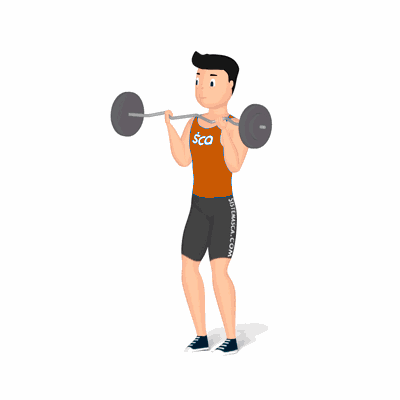

Rosca Direta com Barra W

A execução da rosca direta com uma barra W muda a pegada. Da pegada completamente supinada as mãos trocam para uma pegada menos supinada, praticamente neutra (palmas das mãos voltadas para dentro). Essa posição das mãos enfatiza a cabeça longa (externa) do bíceps e o braquial, sendo menos árdua para a articulação do punho.
Ficha Técnica
Tipo: Musculação
Grupo Muscular: Bíceps
Aparelho: Nenhum
Músculos: Nenhum
Como realizar
- Em pé, mantenha os pés afastados na largura do quadril e os joelhos levemente flexionados, criando uma base que proporcione bastante estabilidade e equilíbrio;
- Segure a barra W com os braços estendidos ao lado do tronco;
- Deixe a palma das mãos voltadas para a frente;
- Flexione os braços e leve os pesos até aproximadamente a altura dos ombros, fazendo um movimento concentrado e mantendo os cotovelos próximos ao tronco;
- Desça devagar até quase estender os braços.
 RC STORE
RC STORE